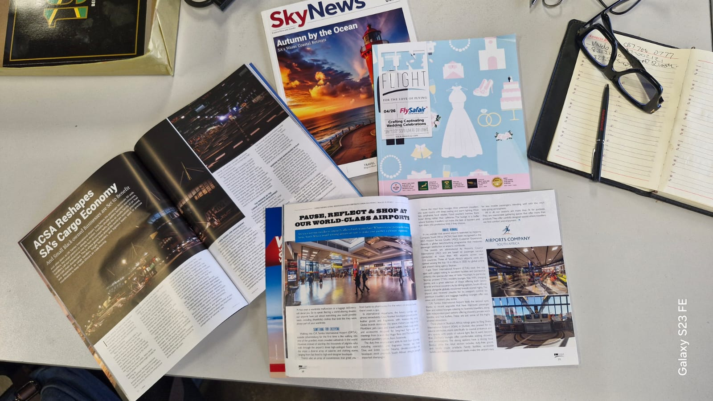
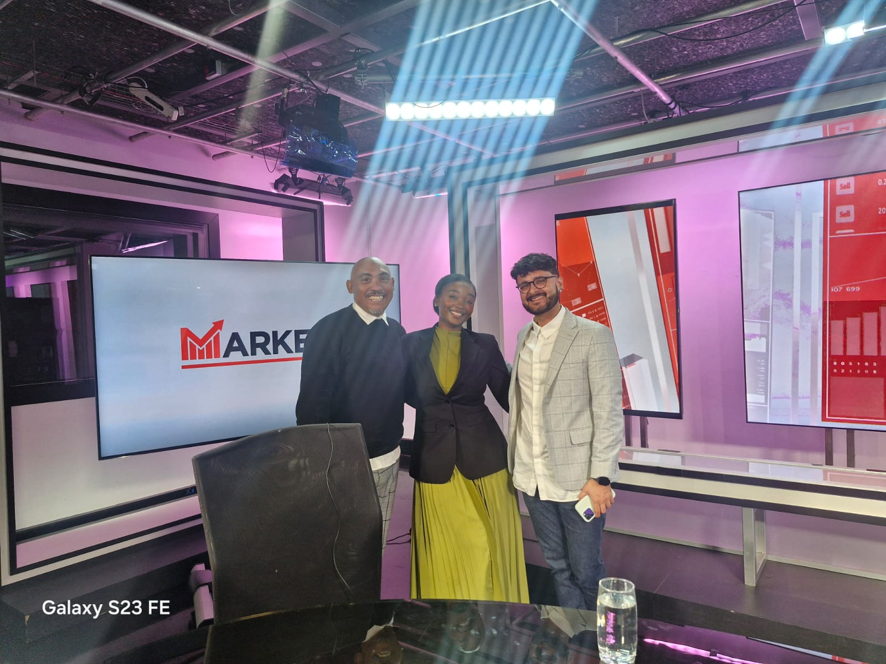
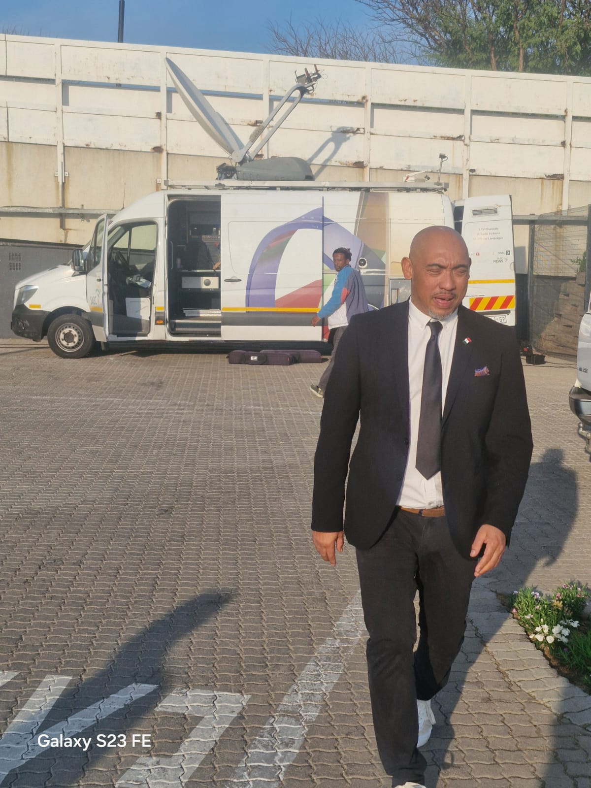
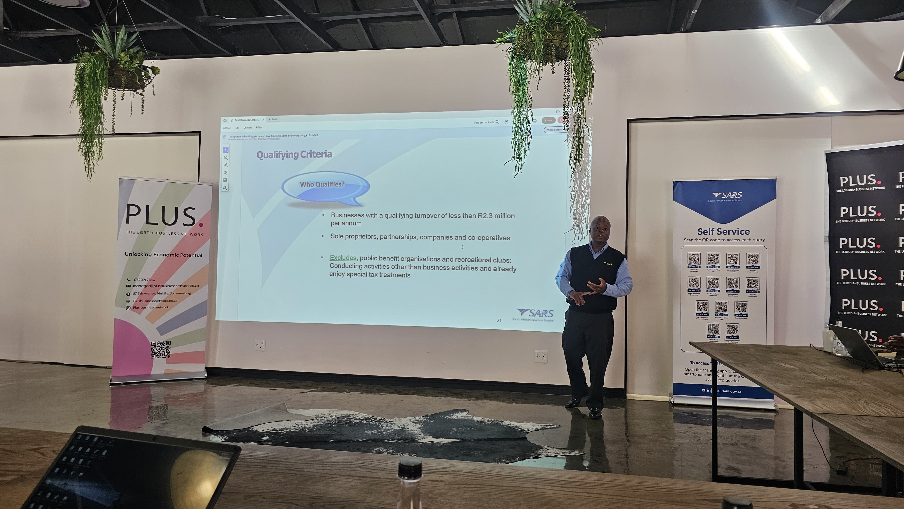
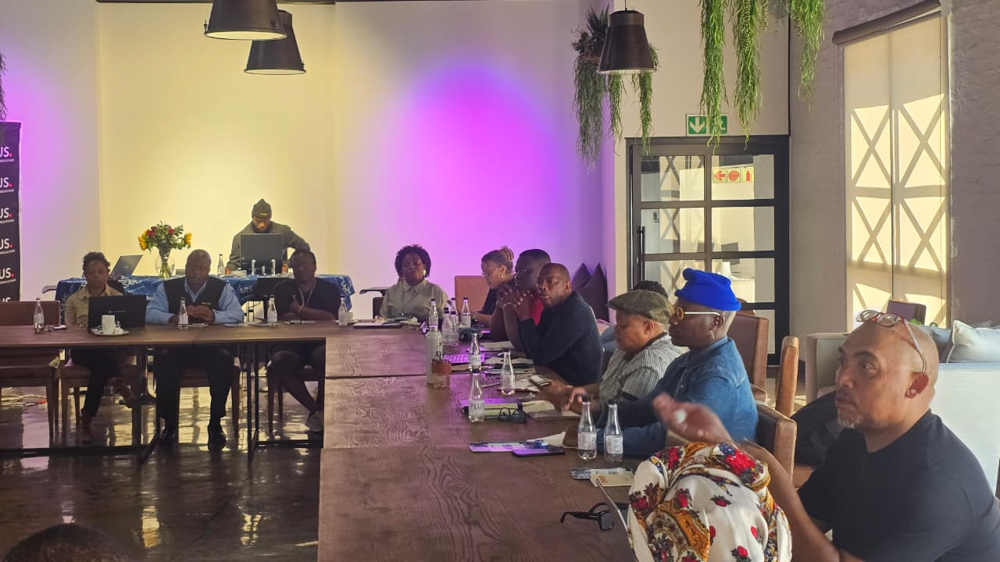

Analyse
Audience behaviour, market trends, competitor activity and the communications task.

03 / MEDIA BUYING
Strategic media planning, negotiation and placement designed around audience, value and performance.
Media buying starts before the booking.
We analyse the audience, market context and competitive environment; build the plan around the business objective; negotiate inventory; and monitor delivery so the campaign can be improved while it is live.
Audience behaviour, market trends, competitor activity and the communications task.
Channel roles, reach, frequency and investment shaped around the objective.
Inventory buying and commercial negotiation focused on value and fit.
Monitor campaign delivery, report transparently and improve performance.

01
02
04
05Commercial negotiation intended to make media budgets work harder.
Channel planning built to improve useful reach and frequency.
Reporting, monitoring and campaign optimisation for clearer performance visibility.
A BETTER BRIEF STARTS WITH A CONVERSATION.